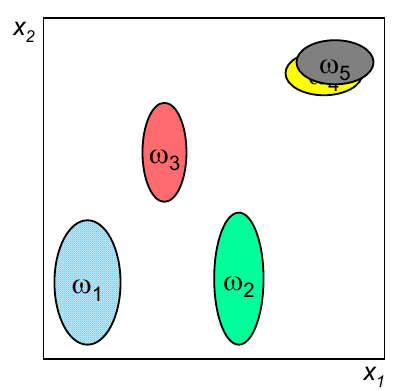

Selección de Características¶
Julián D. Arias Londoño¶
Profesor Asociado
Departamento de Ingeniería de Sistemas
Universidad de Antioquia, Medellín, Colombia
julian.ariasl@udea.edu.co
%matplotlib inline
Introducción¶
En anteriores sesiones hemos discutido algunas razones por las cuales puede ser necesario reducir el número de variables en un problema de aprendizaje automático. Principalmente hemos aludido a la necesidad de llevar a cabo un proceso de reducción de dimensión, debido al problema conocido como “maldición de la dimensionalidad”, sin embargo, son múltiples los beneficios que podemos obtener.
En primer lugar, si estamos usando un modelo paramétrico, usualmente el número de parámetros que deben ser ajustados durante el entrenamiento es proporcional al número de variables, razón por la cual si reducimos la dimensión del espacio de características, estaremos a su vez reduciendo la complejidad del modelo.
Algunos beneficios adicionales pueden ser:
- Simplificar el análisis de resultados
- Mejorar el desempeño del sistema a través de una representación más estable
- Remover información redundante o irrelevante para el problema
- Descubrir estructuras subyacentes en los datos, o formas de representación gráfica más simples
Como ya fue comentando en sesiones anteriores, existen principalmente dos estrategias para reducir el número de variables: selección de características y extracción de características. Ambas requieren la definición de un criterio, en el caso de selección el criterio está asociado a encontrar el mejor subconjunto de variables, de todos los posibles subconjuntos. Mientras que en extracción el criterio está asociado a encontrar la mejor transformación (combinación de variables) sobre todas las transformaciones posibles. Por ahora nos centraremos en la estrategia de selección y en sesiones posteriores revisaremos las estrategias básicas de extracción.
Ventajas de la selección de variables¶
- Reducir variables que pueden ser costosas de obtener en términos computacionales
- Extraer reglas de clasificación o regresión, que conserven el sentido "físico" a partir del modelo, teniendo en cuenta que las características conservan su interpretación original.
- Manejo de características no numéricas
En primer lugar es necesario clarificar porqué razón es necesario llevar a cabo un análisis en conjunto de todas las variables, en lugar de realizar análisis individuales. La gráfica siguiente representa la capacidad discriminante de cuatro variables en un problema de clasificación.


Si realizamos un análisis individual, por ejemplo basado en el índice de correlación o el índice discriminante de Fisher, el resultado indicará que la mejor variable es la 1 y que la peor es la 4. Sin embargo, si el análisis evalúa diferentes subconjuntos de variables, podría darse cuenta que la únión de esas dos variables obteniene un resultado que, en conjunto, es mejor que cualquiera de las variables individuales, por lo que no sería una buena decisión eliminar la variable 4 usando como criterio únicamente un análisis individual de la capacidad discriminante de dicha característica.
Problema¶
Dado un conjunto de variables \(d\), ¿cuál es el mejor subconjunto de variables de tamaño \(p\)?
Evaluar el criterio de optimalidad para todas las posibles combinaciones de \(p\) variables seleccionadas a partir de \(d\) variables, implica evaluar un número de combinación igual a:
el cual puede ser muy elevado incluso para valores moderados de \(d\) y \(p\), por ejemplo, seleccionar las mejores 10 características de un conjunto total de 25, implica evaluar 3.268.760 subconjuntos diferentes de características, para lo cual se debió también evaluar el criterio de optimalidad en cada uno de ellos. Adicionalmente no existe un criterio para seleccionar \(p\), razón por la cual el número de posibles combinaciones que deberían ser evaluadas puede crecer exponencialmente.
A el análisis descrito en el párrafo anterior se le conoce como “Fuerza bruta”, y aunque entregaría el mejor resultado, no puede ser llevado a cabo en tiempos razonables, razón por la cual fue necesario desarrollar métodos de búsqueda cuyo objetivo es encontrar el mejor subconjunto de variables (aunque no pueden garantizar que lo encontrarán), sin necesidad de evaluar todas las posibles combinaciones de características.
Los métodos subóptimos de selección de variables, constan de dos componentes: un criterio de selección y una estrategia de búsqueda.
Criterios de selección¶
- Filtro: La función objetivo evalúa el subconjunto de características a partir de su contenido de información, típicamente se utiliza alguna distancia entre clases, medidas de dependiencia estadística o medidas basadas en teoría de la información.
- Wrapper: La función objetivo es un modelo de aprendizaje, el cual evalúa el subconjunto de características a partir de su capacidad predictiva ($1-Error$ en los datos de prueba), usando una metodología de validación apropiada.
Criterios Tipo Filtro¶
A continuación veremos algunos ejemplos de funciones criterio tipo filtro que pueden usarse:
Distancia probabilística¶
La distancia probabilística mide la distancia entre dos distribuciones \(p({\bf{x}}|c_1)\) and \(p({\bf{x}}|c_2)\) y puede ser usada para la selección de características en problemas de clasificación:
Si se usa una distribución normal para describir las clases, como por ejemplo en las funciones discriminantes Gaussianas, la integral da como resultado:
Si el problema es de múltiples clases, existen variantes que pueden utilizarce, por ejemplo:
Distancia entre clases¶
Se pueden usar diferentes medidas de distancia, por ejemplo distancia Euclidiana, Mahalanobis (Consultar), o por ejemplo una medida basada en el índice de Fisher, que utiliza el concepto de dispersión entre clases (\(S_B = (\mu_1 - \mu_2)(\mu_1 - \mu_2)^T\)) y de dispersión intra clase (\(S_W = (\Sigma_1 + \Sigma_2)\)), para definir el criterio:
Criterios basados en correlación y en medidas de teoría de la información¶
Este tipo de criterios están basados en la suposición de que los subconjuntos de características óptimos, contienen características altamente correlacionadas con la variable de salida y no correlacionadas con las demás variables de entrada. El mismo concepto visto en clases anteriores. Un posible criterio sería:
donde \(\rho\) es el coeficiente de correlación entre las variables indicadas por los subíndices, siendo \(c\) la variable de salida (variable a predecir). El coeficiente de correlación tiene la habilidad de medir el nivel de relación entre dos variables, pero únicamente evalúa la relación lineal. Una medida más robusta debería incluir relaciones no lineales, por ejemplo la Información Mutua es una medida de relación no lineal definida como:
donde \(I(X_m;c)\) es la información mutua entre el subconjunto de variables \(X_m\) y la variable de salida \(c\), \(H(c)\) es la entropía de la variable de salida \(c\) y \(H(c|X_m)\) es la entropía condicional de \(c\), dado que se conoce \(X_m\). En palabras, la información mutua corresponde a la reducción en la incertidumbre de la variapre \(c\) debido al conocimiento de las variables incluidas en el subconjunto \(X_m\). Como vimos en las clases sobre árboles de deicisón, la entropía es en realidad un funcional, es una función que tiene como entrada otra función, la cual corresponde a la distribución de probabilidad de la variable bajo análisis. Por lo tanto la implementación de la Información mutua, depende del tipo de función de distribución que se asuma para cada una de las variables.
Ventajas y Desventajas de cada uno de los tipos de criterio¶
Filtro¶
Ventajas¶
- Rápida ejecución. Los filtro involucran generalmente cálculos no iterativos relacionados con el conjunto de datos, por lo cual son mucho más rápidos que el entrenamiento de un modelo de predicción.
- Generalidad. Debido a que los filtros evalúan las propiedades intrínsecas de los datos, más que las interacciones con un modelo de aprendizaje particular, sus resultados exhiben más generalidad, es decir que la solución puede ser "buena" para una familia más grande de modelos.
Desventajas¶
- Tendencia a seleccionar subconjuntos de características grandes. Debido a que las funciones objetivo son usualmente monótonas, el filtro tiende a seleccionar el conjunto completo de variables como el mejor.
Wrapper¶
Ventajas¶
- Exactitud. Los wrappers generalmente alcanzan mejores tasas de predicción que los filtros, debido a que ellos están ajustados especifícamente para reducir el error de validación.
- Capacidad de generalización. Debido a que los criterios wrappers usan una metodología de validación, tienen la capacidad de evitar el sobre ajuste y proporcionar mejor capacidad de generalización.
Desventajas¶
- Ejecución lenta. Debido a que el wrapper debe entrenar un clasificador por cada subconjunto de variables (o varios si se usa validación cruzada), el costo computacional puede ser muy alto.
- Falta de generalidad. Debido a que el criterio wrapper usa un modelo de predicción específico, el subconjunto de variables finalmente seleccionado, puede ser bueno para el modelo específico usado como criterio, pero no tan bueno para otros modelos.
Estrategias de búsqueda¶
1. Selección secuencial hacia adelante (Sequential Forward Selection - SFS)¶
En este método se comienza con un subconjunto de características vacío y se van adicionando características, una a la vez, hasta que se alcanza el conjunto final con el mayor criterio \(J\). La característica adicionada en cada paso, es aquella que con la cual se maximice el criterio de selección.
Algoritmo¶
- Inicializar el conjunto vacío $X_0 = \{\emptyset\}$
- Seleccionar la siguiente característica $x^+ = \arg\max_{x \notin X_k } \left[ J(X_k + x)\right] $
- Actualizar el conjunto de variables $X_{k + 1} = X_k + x^+; \; k=k+1$
- Volver al paso 2.
SFS presenta mejor desempeño cuando el conjunto óptimo tiene un número de características bajo. Sin embargo, su principal desventaja es que el método es incapaz de remover variables que se vuelven obsoletas después de la adición de otras características.
Ejemplo: Considere la siguiente función como un criterio válido:
Solución:
2. Selección secuencial hacia atrás (Sequential Backward Selection - SBS)¶
El método SBS es análogo al método anterior pero comenzando con el conjunto completo y eliminando una característica a la vez. La característica eliminada es aquella para la cual el criterio \(J\) decresca en menor valor (o incluso aumente).
Algoritmo¶
- Inicializar el conjunto lleno $X_0 = X$
- Seleccionar la siguiente característica $x^- = \arg\max_{x \in X_k } \left[ J(X_k - x)\right] $
- Actualizar el conjunto de variables $X_{k + 1} = X_k - x^-; \; k=k+1$
- Volver al paso 2.
SBS presenta mejor desempeño cuando el conjunto óptimo tiene un número de características elevado. Sin embargo, su principal desventaja es que el método es incapaz de reevaluar la utilidad de variables que fueron removidas en iteraciones previas.
3. Selección Más-L Menos-R (LRS)¶
Este es un método que permite algún nivel de retractación en el proceso de selección de características. Si \(L > R\), el algoritmo corresponde a un procedimiento hacia adelante, primero se adicionan \(L\) características al conjunto actual usando la estrategia SFS, y posteriormente se remueven las peores \(R\) características usando SBS.
Si por el contrario \(L < R\) el proceso es hacia atrá, comenzando con el conjunto completo, removiendo \(R\) y posteriormente adicionando \(L\) variables.
Algoritmo¶
- Evalúe:
- Si $L > R$ entonces
- Comience con el conjunto vacío $X_0 = \{\emptyset\}$
- De lo contrario:
- Comience con el conjunto completo $X_0 = X$
- Vaya al paso 3
- Repita $L$ veces
- $x^+ = \arg\max_{x \notin X_k } \left[ J(X_k + x)\right] $
- $X_{k + 1} = X_k + x^+; \; k=k+1$
- Reputa $R$ veces
- $x^- = \arg\max_{x \in X_k } \left[ J(X_k - x)\right] $
- $X_{k + 1} = X_k - x^-; \; k=k+1$
- Volver al paso 2.
LRS intenta compensar la debilidad de los métodos SFS y SBS con capacidades de retractación. Sin embargo, su principal problema es la introducción de dos parámetros adicionales, \(L\) y \(R\), y ninguna aproximación teórica que permita ajustarlos.
Busqueda Bidireccional (BDS)¶
En este caso los métodos SFS y SBS se ejecutan de manera simultánea, sin embargo para garantizar que el método converge a una solución, se establecen las siguientes reglas:
- Características seleccionadas por SFS para ser añadidas, no pueden ser removidas por SBS
- Características eliminadas por SBS no pueden ser añadidas por SFS
- Si por ejemplo, antes de que SFS intente adicionar una nueva característica, el método evalúa si dicha característica ya fue removida por SBS y, si fue removida previamente, intenta adicionar la segunda mejor variable. SBS opera de manera similar.
Algoritmo¶
- Comience SFS con el conjunto vacío $X_F = \{\emptyset\}$
- Comience SBS con el conjunto completo $X_B = X$
- Seleccione la mejor característica
- $x^+ = \arg\max_{x \notin X_{F_k}, x \in X_{B_k} } \left[ J(X_{F_k} + x)\right] $
- $X_{F_{k + 1}} = X_{F_{k}} + x^+; \; k=k+1$
- Remueva la peor característica
- $x^- = \arg\max_{x \in X_{B_k}, x \notin X_{F_{k + 1}}} \left[ J(X_B - x)\right] $
- $X_{B_{k + 1}} = X_{B_k} - x^-; \; k=k+1$
- Volver al paso 2.
Selección secuencia flotante (Sequential Floating Selection (SFFS y SFBS))¶
Este método es una extensión del método LRS, que incorpora propiedades flexibles de retractación. En lugar de fijar los valores de \(L\) y \(R\) previamente, esté método permite que los valores sean determinados a partir de los datos. La dimensionalidad del conjunto de características seleccionado “flota” hacia arriba y hacia abajo, durante las iteraciones del algoritmo.
Existen dos métodos flotantes:
- Sequential Floating Forward Selection, el cual comienza con el conjunto vacío, el cual una vez terminado el paso hacia adelante, realiza pasos hacia atrás siempre y cuando se incremente el criterio de selección definido.
- Sequential Floating Backward Selection, el cual comienza con el conjunto completo y en el primer paso elimina variables. De manera análoga a SFFS, esté método adiciona variables en la medida en que éstas incrementen el criterio de selección.
Algoritmo SFFS (SFBS es análogo)¶
- Comience con el conjunto vacío $X_0 = \{\emptyset\}$
- Seleccione la mejor característica
- $x^+ = \arg\max_{x \notin X_{k}} \left[ J(X_{k} + x)\right] $
- $X_{k + 1} = X_{k} + x^+; \; k=k+1$
- Seleccione la peor característica
- $x^- = \arg\max_{x \in X_{k}} \left[ J(X_k - x)\right] $
- Evalúe:
- Si $J(X_k - x^-) > J(X_k)$
- $X_{k + 1} = X_{k} - x^-; \; k=k+1$
- Volver al paso 3.
- De lo contrario
- Volver al paso 2.